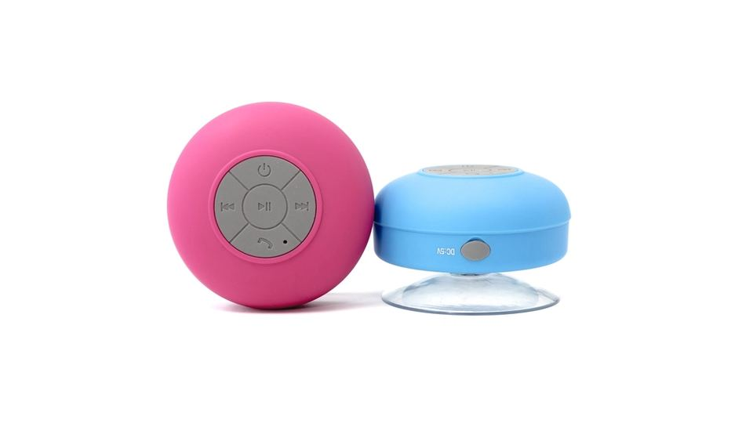

洗い物や洗濯物をたたむ時間、通勤の電車の中。そんな「ながら」の時間に好きな音楽があると、同じ家事や移動でも少し気持ちが軽くなります。ただ、音楽配信サービスはいくつもあり、どれを選べばいいのか分からないという方も多いのではないでしょうか。
この記事では、家事や通勤の合間に音楽を聴きたい方に向けて、音楽配信サービスを選ぶときに比べたい点を整理しました。無料期間や解約のときに気をつけたいことも、あわせてまとめています。
音楽配信サービスとは｜こんな人に向いています
音楽配信サービスは、月ごとの料金を払うことで、たくさんの曲をスマートフォンやパソコン、スピーカーなどで聴けるサービスです。CDを買ったり、曲を1つずつ購入したりしなくても、気になった曲をすぐに再生できます。
- 家事の時間に音楽を流したい人：スマートフォンやスピーカーから、手を止めずに聴ける
- 通勤や移動の時間を楽しみたい人：曲を端末に保存しておけば、電波の弱い場所でも聴ける
- 新しい曲に出会いたい人：好みに合わせたおすすめや、気分別のプレイリストを使える
- CDが増えて置き場所に困っている人：曲を手元に置かずに、聴きたいときに聴ける
- 家族それぞれが音楽を聴く人：家族で使えるプランがあるサービスもある
音楽配信サービスの選び方｜失敗しない4つのポイント
1. 聴きたい曲やアーティストがそろっているか
まず確かめたいのは、自分がよく聴く曲が配信されているかどうかです。配信されている曲の数が多くても、好きなアーティストの曲が入っていなければ、満足しにくくなります。
申し込む前に、よく聴く曲やアーティストを3〜5組ほど検索して、配信されているかを確かめておくと安心です。 多くのサービスでは、登録しなくても配信されている曲を調べられます。邦楽が多いか、洋楽が多いかなど、サービスごとの傾向も見ておきましょう。
2. 「ながら聴き」に便利な機能があるか
家事や通勤の時間に聴くなら、操作の手間が少ないことも大切です。曲を選ばなくても好みに合った曲が流れ続ける機能や、気分や場面に合わせたプレイリストがあると、手がふさがっていても聴き続けやすくなります。
通勤の時間に使うなら、曲を端末に保存して、通信量を気にせず聴ける機能があるかも確認しておきましょう。歌詞の表示や、ラジオのように曲を流す機能など、自分の聴き方に合う機能があるかも見比べるポイントです。
3. 家族で使うか、一人で使うか
家族それぞれが音楽を聴くなら、家族向けのプランがあるかどうかで、選び方が変わります。一人ずつ別に契約するより、まとめて契約したほうが負担を抑えやすい場合があります。
一方で、一人で使う場合や、聴く時間が限られている場合は、機能を絞ったプランで十分なこともあります。誰が、どのくらい聴くのかを先に考えておくと、合うプランが選びやすくなります。
4. 料金と、ポイントなどの使い方
料金は、プランや支払い方法によって変わります。月ごとの料金だけでなく、年単位で払うと負担が変わるか、学生向けや家族向けのプランがあるかも、合わせて見ておきましょう。
ふだん使っているポイントが貯まる、または使えるサービスもあります。買い物や通信などで使っているサービスとつながりがあると、毎月の支払いを考えやすくなることもあります。料金は変わることがあるため、最新の金額は公式サイトで確認しておくと安心です。
ポイント
迷ったときは、まず「よく聴く曲がそろっているか」で候補を2〜3つに絞り、無料期間があれば実際の家事や通勤の時間に使って比べてみると決めやすくなります。
おすすめの音楽配信サービスを比較

音楽配信サービスを、特徴とあわせて比べられるようにまとめました。聴きたい曲の傾向、家族で使うかどうか、ポイントの使い方などを思い浮かべながら見てみてください。曲数・料金・無料期間は変わることがあるため、数字はあくまで目安として、最新の内容は各社の公式サイトでご確認ください。
おすすめサービス比較表
| サービス | 月額の目安 | 曲数・特徴 | 無料体験 | 特徴 | 申込み |
|---|---|---|---|---|---|
| イチオシ楽天ミュージック | 公式サイトで確認 | 楽天ポイントが貯まる | 公式サイトで確認 | 聴くだけで楽天ポイントが貯まる音楽サブスク | 料金を見る |
| 2家事代行のCaSy | 1時間2,790円(税込)〜 | 公式サイトで確認 | 公式サイトで確認 | WEBから1分で予約可能・初回定期割引あり | 料金を見る |
| 3三菱地所の家事代行30min. | 公式サイトで確認 | 公式サイトで確認 | 初回体験60分3,300円〜 | 短時間から利用できる | 料金を見る |
※料金・内容は各社の公式情報・広告素材の記載をもとにした目安です（2026年10月時点）。最新の料金・条件は必ず公式サイトでご確認ください。
利用するときの注意点
注意
- 無料期間のあとは自動で有料になることが多い：無料期間が終わると、そのまま月ごとの料金がかかる仕組みが一般的です。続けない場合は、期間内に解約の手続きをしておきましょう
- 解約の方法は申し込み方で変わる：公式サイトから申し込んだか、アプリのストアから申し込んだかで、解約の手続きをする場所が違うことがあります。アプリを消しただけでは解約にならない点にも注意が必要です
- 解約すると保存した曲は聴けなくなる：端末に保存した曲やプレイリストは、解約すると再生できなくなるのが一般的です
- 通信量に気をつける：外で聴くことが多い場合は、家のWi-Fiで曲を保存しておくと、通信量を抑えやすくなります
注意
無料期間の終わる日は、申し込んだその日にカレンダーやスマートフォンのメモに書いておくと安心です。解約の手続きをしたあとは、完了の画面やメールが届いているかも確認しておきましょう。
この記事に関連する商品（楽天市場）
 ソニー SONY フルワイヤレスイヤホン / Bluetooth 対応 ] ブラック WF-C5…コジマ楽天市場店楽天市場で価格を見る
ソニー SONY フルワイヤレスイヤホン / Bluetooth 対応 ] ブラック WF-C5…コジマ楽天市場店楽天市場で価格を見る Anker Soundcore Select 4 Go bluetooth スピーカー【最大20…アンカー・ダイレクト楽天市場店楽天市場で価格を見る
Anker Soundcore Select 4 Go bluetooth スピーカー【最大20…アンカー・ダイレクト楽天市場店楽天市場で価格を見る Shokz OpenRun/OpenRun Mini 骨伝導イヤホン ワイヤレス 骨伝導ヘッドホ…Shokz Official Store楽天市場で価格を見る
Shokz OpenRun/OpenRun Mini 骨伝導イヤホン ワイヤレス 骨伝導ヘッドホ…Shokz Official Store楽天市場で価格を見る
※価格・在庫・送料は変わることがあります。購入前に楽天市場の商品ページでご確認ください。
よくある質問
家事の時間にスピーカーで流しても大丈夫ですか？
多くのサービスでは、スマートフォンとBluetoothでつないだスピーカーから再生できます。台所や洗面所など、家事をする場所の近くにスピーカーを置くと、スマートフォンを持ち歩かずに聴けて便利です。
複数のサービスを試してから決めてもいいですか？
無料期間のあるサービスなら、試してから決める方法もあります。ただし同時にいくつも申し込むと、解約の日を忘れやすくなります。一つずつ順番に試すほうが、管理しやすく安心です。
途中で別のサービスに乗り換えることはできますか？
乗り換えること自体はできますが、作ったプレイリストや保存した曲は、別のサービスにそのまま移せないことが多くあります。よく聴く曲のリストを控えておくと、乗り換えたあとに作り直しやすくなります。
料金や無料期間は、どこで確認すればいいですか？
料金・配信曲数・無料期間などの条件は、キャンペーンやプランの変更で変わることがあります。最新の内容は各社の公式サイトで確認し、解約の方法もあわせて読んでおくと安心です。
まとめ
この記事のポイント
- 音楽配信サービスは、家事や通勤の「ながら」の時間を過ごしやすくする方法の一つ
- まずはよく聴く曲やアーティストが配信されているかを確かめる
- ながら聴きに便利な機能、家族で使うかどうか、料金やポイントの使い方を比べる
- 無料期間のあとは有料になることが多いので、解約の方法と期限を先に確認しておく
毎日の家事や移動の時間に好きな音楽があると、同じ時間でも少し過ごし方が変わります。気になるサービスが見つかったら、公式サイトで内容を確かめて、自分の聴き方に合うかどうかゆっくり比べてみてください。